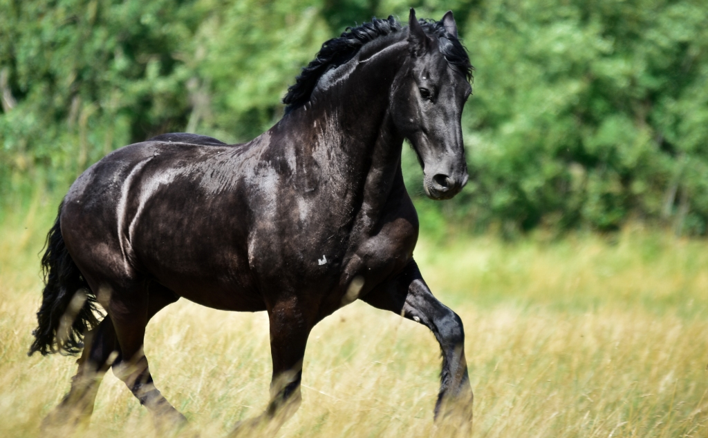
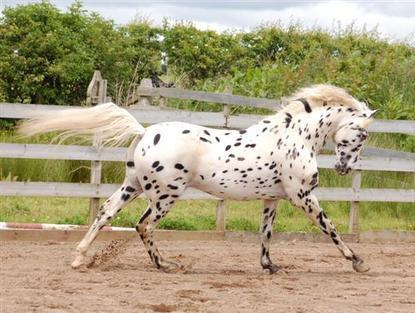
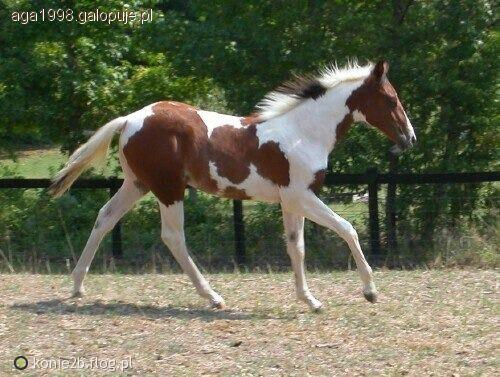

Chciałabym tu opowiedzieć trochę więcej o sobie.
Z głównych informacji jestem studentką pierwszego roku analityki biznesowej, a moje zainteresowania to:
Pierwsze dwa lekko rozwinę poniżej :)
Moja przygoda z końmi zaczęła się w bardzo młodym wieku. Odkąd pamiętam moim największym marzeniem było nauczyć się jeździć na koniach.
Byłam przeszczęśliwa, kiedy moi rodzice pozwolili mi spełnić to marzenie.
Nauczyłam się jeździć w wieku około 10 lat. Niestety miałam przerwy w jeździectwie z powodu szkoły i nauki, jednakże cały czas się to przewija w moim życiu.
Oto moje kilka ulubionych ras:
| Koń fryzyjski |  |
| Knabstrup |  |
| Pinto |  |
Język niemiecki znam od najmłodszych lat, ponieważ już w wieku 6 lat nauczyłam się mówić w tym języku.
Wszystko zaczęło się, kiedy jako małe dziecko wyjechałam do Niemiec. Chodziłam tam do pierwszej klasy podstawówki. Po roku wróciłam do Polski, jednak dalej pielęgnowałam ten język.
Uczestniczyłam w konkursach, gdzie zdobywałam czołowe miejsca. Jeździłam również na wymiany polsko-niemieckie, gdzie niejednokrotnie miałam rolę tłumacza.